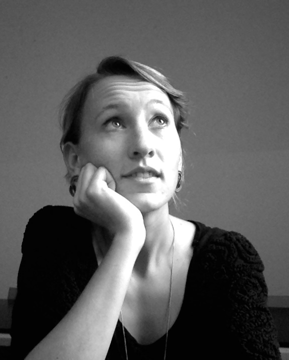

Hoi, mijn naam is Veerle
My name is Veerle Rigter and I am a designer and builder; of buildings, architectural installations, artworks, furniture and websites. I enjoy solving problems, in the best and most beautiful way possible. And preferably solve other problems with the same design solution while I'm at it.
I have always been interested in how things work and fit together, while at the same time I dream and draw the unimaginable. For this reason, I chose to study Architecture at Delft University of Technology, combining the technical with the creative.
Additional to my studies in Architecture, Urbanism and Building Sciences at Delft University of Technology, I expanded my horizon with international experience at the art academy Accademia Italiana (Florence, Italy),
Chalmers Technical University (Gothenburg, Sweden) and the University of New South Wales (Sydney, Australia). Throughout my master degree, I attended a specialisation in sustainable development and technology (TiSD) and initiated and organised various events,
such as the Argus Expo.
My craving for more practical experience and ‘getting my hands dirty’ got me into the design and build of furniture and installations. Since 2016 I also run my own business Studio Davero together with Roxanne Kiel. Studio Davero is a design studio focussed on sustainable product, interior and service design. We aim to create additional value through design by smart usage of resources that are already available. As a principle for our designs, we try to see where optimisation is possible in regard to space, time, finance, environmental impact and social opportunities. Have a look at our website studiodavero.nl for more information.
My interest in the more digital design world has led me to gain knowledge as Front-end developer, expanding my skills as an allround designer.
{kind=link}